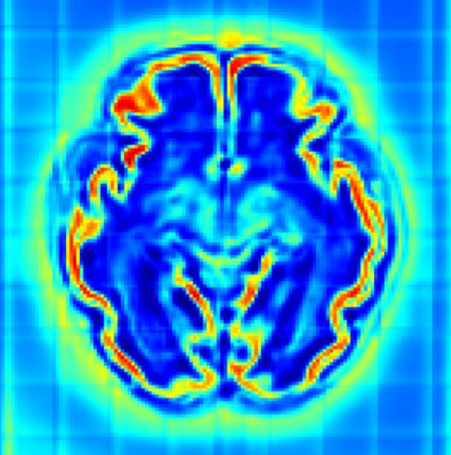
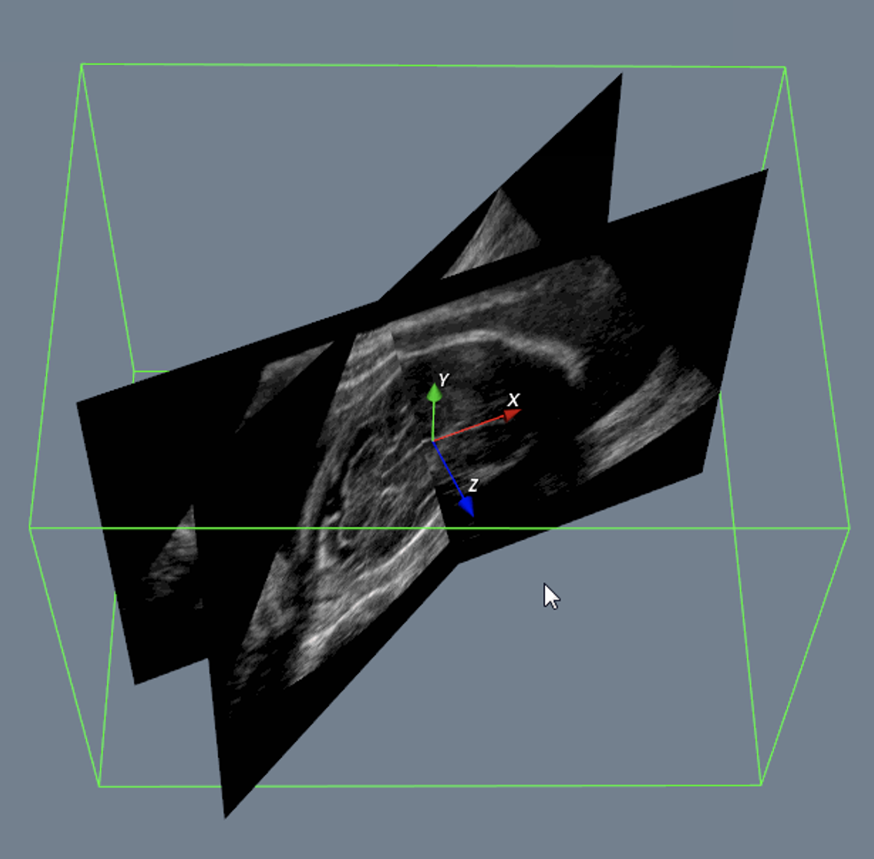

|
Haoran Dou
I am a Ph.D。 student in CISTIB at School of Computing, University of Leeds, supervised by Prof. Alejandro Frangi, Dr. Nishant Ravikumar and Dr. Yan Xia.
I received my M.E. in MUSIC Lab at School of Biomedical Engineering, Health Science Center, Shenzhen University, supervised by Prof. Dong Ni. During my master period, I was offered the chance to visit the CRL, BCH, Harvard Medical School and supervised by Prof. Ali Gholipour. Before that, I obtained my B.E. at Shenzhen University.
Email /
Google Scholar /
GitHub
|
|
|
Research
My current research is mainly on deep learning in medical image computing, particularly in fetal computer-aided diagnosis, and cardiac computational modelling.
|
News
[10/2020] I started my Ph.D. career in CISTIB at School of Computing, University of Leeds.
[09/2020] Our paper about robust model was accepted by IEEE Access.
[06/2020] Two papers were accepted by MICCAI 2020.
[06/2020] Our review paper about noisy label was accepted by Medical Image Analysis.
[06/2020] I successfully defended my Master thesis.
[03/2020] I completed my internship at Computational Radiology Labtoray, Boston Children's Hospital.
|
|

|
A Deep Attentive Convolutional Neural Network for Automatic Cortical Plate Segmentation in Fetal MRI
Haoran Dou, Davood Karimi, Caitlin K. Rollins, Cynthia M. Ortinau, Lana Vasung, Clemente Velasco-Annis, Abdelhakim Ouaalam, Xin Yang, Dong Ni, Ali Gholipour,
arXiv, 2020
arXiv / code
The first work on fetal cortical plate segmentation using a 3D CNN equipped with a novel attention module with mixed kernel convolutions.
|
|

|
Agent with Warm Start and Active Termination for Plane Localization in 3D Ultrasound
Haoran Dou*, Xin Yang*, Jikuan Qian, Wufeng Xue, Hao Qin, Xu Wang, Lequan Yu, Shujun Wang, Yi Xiong, Pheng-Ann Heng, Dong Ni,
MICCAI, 2019 (Oral Presentation)
arXiv
A deep reinforcement learning framework with landmark-aware alignment module and active termination strategy for standard plane localization in 3D US.
|
|
Honors & Awards
EPSRC DTP Studentship (top 10%), 2020-2024
The First Prize Scholarship of Shenzhen University (top 20%), 2017,2019
|
Professional Activities
Review Service
IEEE Transactions on Medical Imaging
IEEE Transactions on Biomedical Engineering
IEEE Journal of Biomedical and Health Informatics
Learning Note about Deep Learning & Medical Image Analysis in here
|
Template is adapted from here.
|
|